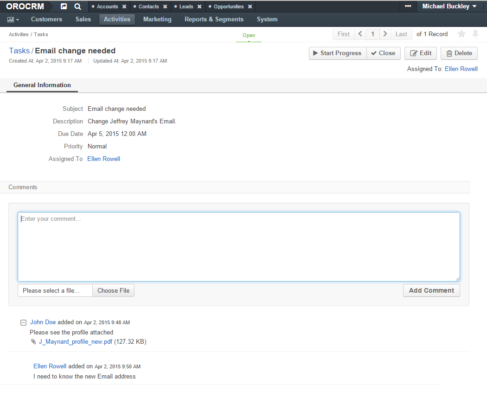

Add Comment¶
Interaction between users is an important part of successful work. In order to enable users to leave comments on records of an entity or on details of an activity, other than a contact request (e.g. leave some additional details of task, comment on an email sent or a call made, etc.) use the “Add Comment” action.
Note
Comments are available for any activity or entity that has the Comments activity enabled in the entity settings.
Create and View Comments¶
You can make a comment when viewing or editing the item deatils, and also at the linked activity details.
Caution
The ability to view and write comments depends on the permissions and role settings defined in the system for the Comment entity.
On these pages, the user should:
- Click the Add Comment button.
- Enter the comment into the the text-box.
- Click the Choose File button to add a file to the comments.
- Click the Add Comment button to save the comment.
Hint
You can edit the Comment entity and add new fields, if required, in System > Entities > entity Management
For example, Ellen Rowel has a task “Email change needed”, which required her to change the email address of Mr. Jeffrey Maynard.
- First, Ellen Rowel opened the “My Tasks” grid.
- Then she went to the View page of the task and left a comment.

- John Doe opened the task details on the View page of Jeffrey Maynard’s contact record.
- Then he left a comment and attached Maynard’s profile to it.

Michael Buckley from the Marketing department opened the Tasks grid and opened the task View page. He can see both comments made by Ellen Rowel and John Doe.
